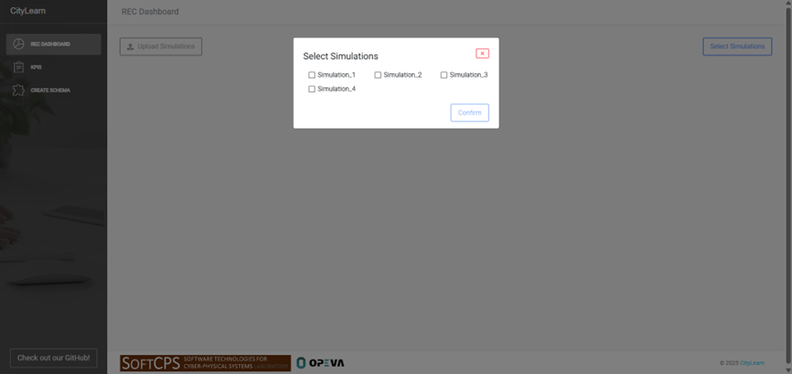
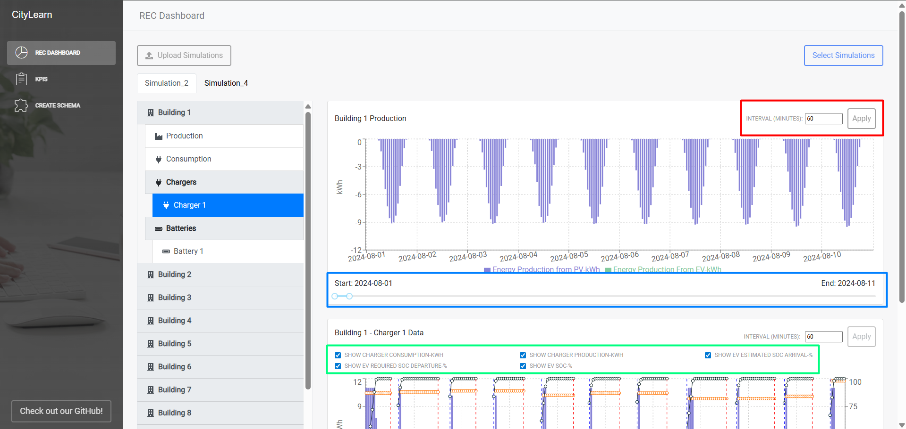
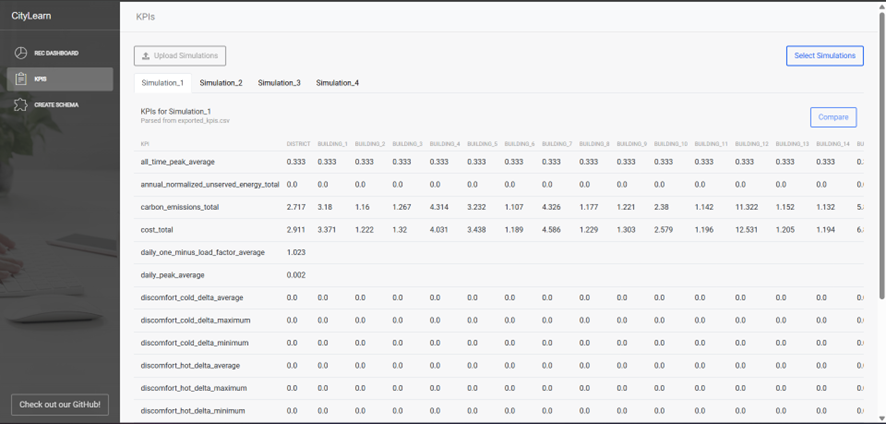
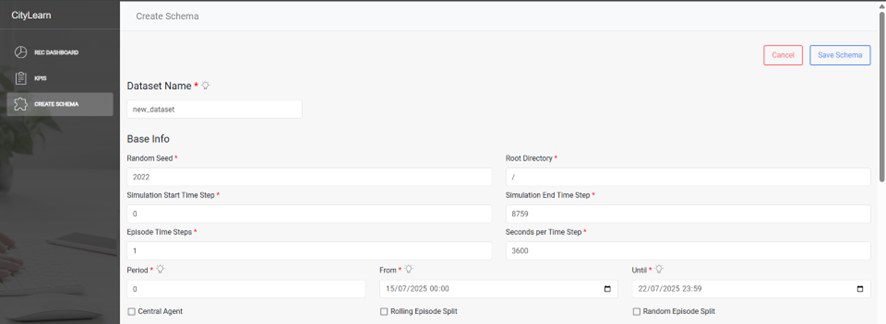
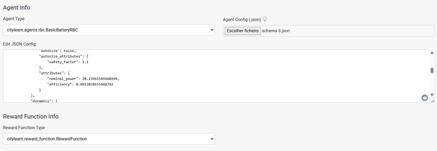

CityLearn UI
CityLearn UI is a visual dashboard for exploring simulation data generated by the CityLearn framework. It was developed to simplify the analysis of results from smart energy communities, district energy coordination, demand response (among other applications), allowing users to visually inspect building-level components, compare simulation KPIs, and create simulation schemas with ease.
The interface is available in two options:
Web app: https://citylearnui.netlify.app/ (free hosted version — not recommended for sensitive/personal data)
Open-source code: https://github.com/Soft-CPS-Research-Group/citylearn-ui
You can check a tutorial at the official CityLearn website, in the CityLearn UI repository README, or at the help tooltip of the official webapp.
Compatibility: This version of the UI currently supports CityLearn v2.4.3 simulation data.
Developed by: José, a member of the SoftCPS, Software for Cyber-Physical Systems research group (ISEP, Portugal) in collaboration with the Intelligent Environments Lab, University of Texas at Austin.
Exporting Data From CityLearn into CityLearn UI
CityLearn automatically exports the folder structure expected by the UI. There are three workflows to consider:
render=False(default): no CSVs are produced, so the UI cannot ingest data.render=True: data is exported every simulation step into timestamped folders. You may keep the default location (<project>/render_logs/<timestamp>) or setrender_directory/render_directory_nameoncitylearn.citylearn.CityLearnEnvto choose the destination.render=Falsewith explicit export: keep rendering off for faster runs and callcitylearn.citylearn.CityLearnEnv.export_final_kpis()(or a custom exporter) at the end. This lazily creates the render folder and writes the same CSV layout required by the UI.
Render-on Example
from pathlib import Path
from citylearn.citylearn import CityLearnEnv
schema = 'data/datasets/citylearn_challenge_2022_phase_all_plus_evs/schema.json'
env = CityLearnEnv(
schema,
central_agent=True,
episode_time_steps=48,
render=True,
render_directory=Path('outputs/ui_exports'), # optional custom base folder
)
observations, _ = env.reset()
while not env.terminated:
actions = [env.action_space[0].sample()]
observations, reward, terminated, truncated, info = env.step(actions)
The code above writes per-step CSV files into outputs/ui_exports/<timestamp>/. Omitting render_directory stores the results in render_logs/<timestamp>/ by default.
Export-at-the-End Example
from citylearn.citylearn import CityLearnEnv
env = CityLearnEnv(schema, central_agent=True, episode_time_steps=48, render=False)
observations, _ = env.reset()
while not env.terminated:
actions = [env.action_space[0].sample()]
observations, reward, terminated, truncated, info = env.step(actions)
class _Model:
pass
model = _Model()
model.env = env
env.export_final_kpis(model, filepath='exported_kpis.csv')
print('Render folder:', env.new_folder_path)
This pattern keeps rendering off (fastest) and emits the UI-compatible folder once the run completes. The helper reuses the same rules for render_directory/render_directory_name if they were provided during construction.
The UI consumes the directory produced by either of the latter two approaches. The system uses the render() method to iterate over buildings, electric vehicles, batteries, chargers, pricing, etc., using their as_dict outputs to build CSV histories where each row corresponds to a time instant and columns include units. Timestamps are converted to calendar dates for display. You can disable step-wise exporting by keeping render=False and relying on the end-of-run exporter.
Pages within CityLearn UI
CityLearn UI has three main pages, described below. All referenced images should be placed under docs/source/_static/ui/ with the indicated filenames.
Dashboard Overview
This landing page lets you upload and explore simulations.
Uploading Simulations
Prepare a folder named
SimulationData.Inside, add subfolders per simulation.
Each simulation folder must contain CSVs named as follows: * Buildings:
exported_data_building_X(whereXis the building number) * Components: append suffixes such as_batteryor_charger_X_Y* Episodes: end filenames with_epZ(episode numberZ)
Structure example: SimulationData/MySim/exported_data_building_1_battery_ep3.csv.
Selecting Simulations
After uploading a valid folder, click Select Simulations to choose which runs to visualize. At least one simulation must be selected before confirming.
Viewing Simulation Data
Each chosen simulation appears as a tab. Within a tab:
The left sidebar lists buildings and their grouped components (Consumption, Production, Other Equipment).
Selecting a component displays its chart on the right.
This layout enables quick navigation across building-level data.
Graphs and Filters
Graphs support multiple filtering controls:
Adjust time-step intervals (highlighted in red),
Toggle data series via checkboxes (green),
Restrict start/end dates using the slider (blue).
KPIs Page Overview
The KPIs page allows uploading folders and selecting simulations for KPI analysis. Once a simulation is active, its KPIs appear in a table (rows = KPIs, columns = buildings).
Comparing Simulations
When multiple simulations are loaded, a Compare button lets you choose a reference run. The comparison tab shows Simulation Y – Simulation X deltas.
Positive values (improvements) appear in bold green.
Negative values (declines) appear in bold red.
Zero differences remain black.
Create Schema Overview
The Create Schema page guides dataset assembly via three sections.
Step 1: Dataset Information
Displays dataset metadata, period settings, selected observations, and actions.
Step 2: Agent & Reward Configuration
Define agent details, reward functions, and upload JSON configuration files. Uploaded files can be previewed and edited inline.
Step 3: Schema Structure (Canvas)
Provides a drag-and-drop canvas for constructing schemas:
The left panel lists components to add (buildings, equipment, etc.).
Drag components onto the canvas and fill in required fields.
Link equipment to buildings, rename items, and copy/paste repeating elements.
This interface streamlines the creation and management of complex simulation schemas.
UI updates and improvements are ongoing. Feedback and contributions are welcome via the CityLearn UI repo
Contributors: José Oliveira and Tiago Fonseca (calof@isep.ipp.pt)